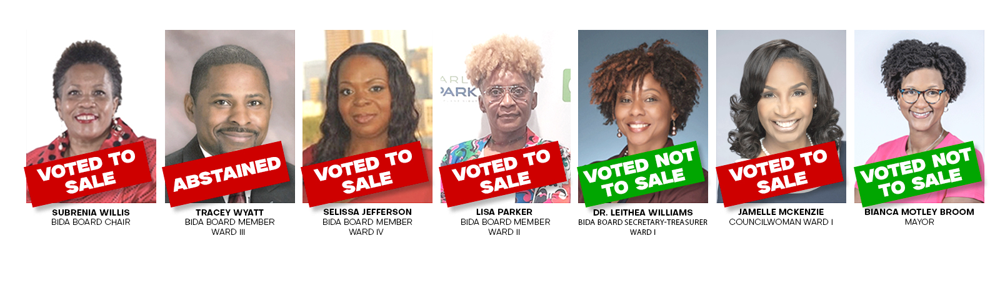

A 6.5-acre public park, dedicated to youth baseball. Morehouse College offered the city $2 million to preserve it. The city manager rejected the higher offer and sold it to a private developer — Creed Acquisitions — for $1.5 million. The deal was authorized in executive session. The buyer had given campaign contributions to multiple council members. Last night, at 11:54 p.m., the same council deeded another acre to the same buyer for up to $110,000. The Ward 1 councilwoman seconded both motions.
Bill Evans Field is a public park in Ward 1 of College Park. For years, it hosted youth baseball, college baseball, and the kind of weekend community life that smaller cities are made of. What happened to it didn't happen all at once. It happened in stages — in council meetings, in executive sessions late at night, in newspaper editorials, and in the slow, often confusing way local government decisions actually unfold.
You'll meet a few people in the chapters below. The Mayor — Bianca Motley Broom — opposed the sale on camera. Two councilmen, Joe Carn and Roderick Gay, moved the consequential motions. The buyer was Creed Acquisitions. The Atlanta Journal-Constitution later reported that Creed had given campaign contributions to multiple council members. Morehouse College offered the city more money to preserve the field as a ballpark; the city manager rejected the higher offer.
And the Ward 1 councilwoman — Dr. Jamelle McKenzie, who represents the neighborhood where the field sits — has been on both sides of this. Worth knowing up front, because her position is part of the story, and it has moved more than once in two years.
What you do with that is up to you. The chapters below are sourced to public meeting minutes, the Atlanta Journal-Constitution, WSB-TV, and a verbatim transcript from last night. Read them the way you would any neighborhood story — slowly, with the people in it as people, and the dates in the order they actually happened.
This is the first piece in a small series about how a few specific decisions got made in College Park over the past two years. Each story stands on its own. This one starts with a baseball field.
Bill Evans Field is a 6.5-acre baseball complex in the heart of College Park. It is officially designated a public park under Chapter 13 of the College Park City Code. For years it has been used by the Atlanta University complex and the Marquis Grissom Baseball Association — a youth sports organization founded by the former MLB All-Star.
On January 16, 2024, before any of what follows, the council unanimously approved $319,000 annually in Fulton County Arts and Culture improvements to that same field. The city was investing in it. The community was using it. It was, in every public-record sense, a working public asset.
Five weeks later, the council started giving it away.
On February 19, 2024, at 9:37 p.m., the College Park City Council went into Executive Session for "Real Estate and Personnel." When they returned to public session, Councilman Joe Carn moved, with a second by Councilwoman Jamelle McKenzie, to direct city staff to execute a quitclaim deed transferring approximately 6.5 acres at Bill Evans Field to BIDA — the Business and Industrial Development Authority. The vote was unanimous.
There was no public hearing. There was no published appraisal. There was no marketing period. There was no notice to the youth sports organizations using the field. The motion was made and passed in the same minute they emerged from a closed-door meeting.
On May 6, 2024, at 12:02 a.m. — past midnight — the council entered another Executive Session, this time for "Real Estate and Litigation." Councilman Carn moved to authorize the Mayor to formally execute the quitclaim deed. Councilwoman Arnold seconded. A separate MOU designating the proceeds for Phillips Park passed 3-0 with Arnold abstaining over concerns about an amendment stripping the City Manager's signing authority.
McGouirk was invoking the Public Trust Doctrine — a long-established legal principle that government cannot dispose of dedicated public parkland without specific procedural protections. The council, on the record, did not respond to the legal challenge. The transfer proceeded.
Once Bill Evans Field landed at BIDA — an authority whose board is appointed by the city council — the public-bid requirements that bind the City Council no longer applied in the same way. BIDA proceeded to sell the parcel to Creed Acquisitions, an affiliate of H.J. Russell & Company, for $1.5 million.
On the record at the August 19, 2024 council meeting, longtime resident Tom Coleman ran the math out loud for the council:
Creed paid about half of comparable market value. In a metropolitan submarket where vacant residential land routinely transacts at $12 a square foot, the city's redevelopment authority sold a dedicated public park at $5.74. The buyer got roughly $1.5 million in built-in equity on day one.
At no point in the public record did the council publicly disclose the appraised value of the parcel, the list of bidders or interested parties, the marketing process BIDA used, or any comparable sales used to set the price.
Morehouse College — joined by Marquis Grissom Baseball Association — put a serious proposal in front of the city. The plan: rehabilitate Bill Evans Field, partner with a local youth baseball organization, and make it the home field for Morehouse and Clark Atlanta baseball. They called it, on the record, "a jewel baseball field of the South."
The Morehouse offer reportedly came in at $2 million. The Creed offer was $1.5 million. The city manager rejected the higher offer from the historically Black college that wanted to preserve the field's use as a ballfield, and accepted the lower offer from the private developer who would build apartments on it.
On April 7, 2025, when residents kept pressing the issue, Councilman Roderick Gay dismissed Morehouse on the record as "a conversation" with no legal documentation: "It just doesn't exist."
The Atlanta Journal-Constitution editorial of June 19, 2024, written by Annemarie O'Bea, reported the part the council didn't mention from the dais:
The buyer was not arms-length. The buyer had a financial relationship with members of the very council that authorized the sale. This is the textbook structure of a pay-to-play allegation, and it sits in plain sight in a major-newspaper editorial that ran a week after the closing.
No council member, on the record, addressed the campaign-contribution disclosure. No one recused themselves. The vote proceeded.
Bill Evans Field sits inside Ward 1 of College Park. The Ward 1 council member is Councilwoman Dr. Jamelle McKenzie. The first vote to start the disposal process — Feb 19, 2024, the executive-session quitclaim directive — was moved by Councilman Joe Carn. It was seconded by McKenzie. She voted Aye.
She then spent the next eighteen months saying things to her constituents that were difficult to reconcile with that vote.
On May 13, 2026, when the council authorized the additional acre sale to Creed for $101,000, McKenzie was still the Ward 1 councilwoman. The community her ward includes is still asking what happened to their park.
A recall campaign — recalljamellemckenzie.com — has been organized by residents directly in response to her votes on Bill Evans Field.
Bill Evans Field did not get sold by accident. A specific group of people, voting in a specific room on a specific day, made it happen. The Business and Industrial Development Authority — BIDA — is the city-appointed body that BIDA-board-voted to accept and then dispose of the field. United College Park published the scorecard, by name, with photos, after a key February 2025 BIDA action on the field:

Four members voted to move the sale forward. Three voted against it. One abstained. Names matter, because votes are made by people, not by buildings.
Two things are worth holding together as you read this list.
First, in February 2025, on the BIDA side, Councilwoman Jamelle McKenzie voted against the sale. That was after she had seconded the original Council quitclaim in February 2024, after she had publicly defended the sale in June 2024, and a few months before she would say in September 2025 that the field should be saved. Then, fifteen months later, last night at 11:54 p.m., she seconded both motions to sell another acre at the same complex to the same buyer. She has been on both sides of this — more than once.
Second, the BIDA Chair, Dr. Subrenia M. Willis, voted to move the sale forward. The Willis family runs the Georgia Favor Track Club whose annual classic is held at Bill Badgett Stadium — the same complex now being chipped away to Creed Development. The question we'll take up in the next piece in this series isn't speculative. It's a vote that's on the record.
Source attribution: vote scorecard published by United College Park (UCP). The image displays names as UCP rendered them; official council records show several spellings differently — Subrenia Willis, Selissa Jefferson, Lisa Parker, Tracey Wyatt, Leithea Williams. We have used the council-record spellings in our text above.
"Calling foul on College Park's sale of a popular ballfield"
An opinion editorial published June 19, 2024 by Annemarie O'Bea documented the $1.5M sale to Creed, the $5.74/sq ft price vs $11.94 market comparable, the Morehouse $2 million counter-offer the city manager rejected, and the campaign contributions from Creed to council members.
"Some College Park residents, mayor, against teardown of ballfield"
Mayor Bianca Motley Broom on camera: "I was not in favor of selling Bill Evans field. I think we need all the greenspace we can muster. I'm not an appraiser, but I do think that price is low — that's another reason I'm not in favor of the sale."
recalljamellemckenzie.com
Ward 1 residents launched a formal recall effort against Councilwoman McKenzie in response to her vote and her conduct around Bill Evans Field. The campaign is documented at recalljamellemckenzie.com.
On May 13, 2026 at 11:44 p.m., the council exited executive session. Ten minutes later, at 11:54 p.m., they passed two motions back to back. The meeting then adjourned until June.
The first motion (Mayor & Council, 11:48 p.m.): "Motion to approve the city council deeding the 1-acre expansion area of the Creed development site at Bill Badgett Stadium per the map that we attached, and move forward with that to the College Park Redevelopment Agency."
Moved by Councilman Roderick Gay. Seconded by Councilwoman Jamelle McKenzie. Unanimous.
The second motion (Redevelopment Authority, 11:54 p.m., minutes after the first): "Motion to approve the sale and conveyance of approximately 1 acre of the redevelopment expansion area at Bill Badgett Stadium to Creed Development, not to exceed the sale price of $110,000, in furtherance of the redevelopment purposes... and per the city's approved redevelopment area resolution 20269."
Moved by Councilman Roderick Gay. Seconded by Councilwoman Jamelle McKenzie. Unanimous. Meeting adjourned at 11:55 p.m.
The per-acre price went down. To the same buyer. Two years later. With no public bidding process. With no published appraisal. In a metropolitan land market that has not lost half its value.
And the Ward 1 councilwoman who in September 2025 said on the record, "I think we should save the ones we've got including Bill Evans Field," — eight months ago — seconded both motions to sell another acre of the same complex to the same buyer at half the price.
The meeting then adjourned until June.
These are documents that, if Bill Evans Field had been disposed of through a normal, defensible municipal process, would exist and would have been publicly produced. They have not been.
Three specific actions, in order of effort. All of them are within reach of any College Park resident. You are not the first person to ask these questions — United College Park has been organizing on Bill Evans Field since 2024.
The Public Comment period gives every resident 3 minutes. The on-record statement below is sourced entirely to this page — no allegations beyond the public meeting minutes.
A targeted ORR closes the documentation gap. Submit to the City Clerk in writing. The request below is specific enough to be hard to deny.
Every share is one more resident who knows the actual record. This page is sourced entirely to public council minutes; nothing on it is allegation. Forward it to your council member. Tag the buyer. Send it to the press. Send it to the people in your neighborhood who care about youth baseball.
Bill Badgett Stadium — the site where last night's additional acre was deeded to Creed — sits adjacent to property owned by Rex and Subrenia Willis, at 1927 John Calvin Avenue. For more than twenty years, the Willises have run Favor House: a food-distribution nonprofit and a youth track program called the Georgia Favor Track Club. Their track club's annual "Spring into Favor Track and Field Classic" is held, every year, at Bill Badgett Stadium. The track is, in effect, theirs to operate.
On August 5, 2024, longtime resident Althea Morris told the council on the record what the apartment buildout would actually mean:
You would expect the family that runs a track program at Bill Badgett Stadium — a family that has spent two decades publicly advocating for youth recreation and green space in College Park — to be among the loudest voices opposing apartment buildings that will sit at the front door of their track. You would expect a statement, a public comment, a letter to the council.
That hasn't happened. Across the entire two-year record reviewed for this story, neither Rex nor Subrenia Willis has spoken publicly in opposition to the Creed development. They have spoken many times in those meetings — defending their service, defending their family, defending council members — but not against this. Subrenia Willis was on the BIDA board, and later chaired it, during the period when BIDA conveyed Bill Evans Field to Creed.
Another Ward 1 resident, Sherry Godfrey, asked the question directly at the February 3, 2025 meeting:
That's a fair question, and it deserves a fair answer. Why has a family that runs a youth track program at Bill Badgett Stadium not opposed an apartment complex going up next door to their track? Why has the BIDA chair — whose board approved the original Bill Evans transfer — not weighed in publicly when the same development reaches further into the same complex?
We're not going to answer that here. The next piece in this series will take that question seriously — what the public record shows about the Willis family, Favor House, their relationship to the city's contracting and grant-making, and the question Sherry Godfrey asked on the record. For now, hold the question.